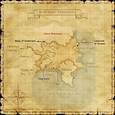
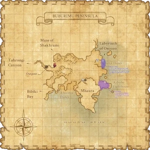

Description
Buburimu Peninsula is an outdoor area in Kolshushu.
Map

Involved in Quests / Missions
| Quest / Mission | Type | Starter | Location |
|---|---|---|---|
| A Greeting Cardian | General | Kororo | Windurst Woods (H-9) |
| A Minstrel in Despair | Job: Bard | Mertaire | Lower Jeuno (I-8) |
| An Explorer's Footsteps | Map | Abelard | Selbina (G-9) |
| Brigand's Chart Quest | Side Quest | Zaldon | Selbina (H-9) |
| Buburimu Peninsula/Garrison | Garrison | --- | --- |
| Expeditionary Force/Buburimu Peninsula | Expeditionary Force | --- | --- |
| Path of the Bard | Job: Bard | Mertaire | Lower Jeuno (I-8) |
| The Miraculous Dale | General | Rakuru-Rakoru | Lower Jeuno (I-6) |
| The Old Monument | Job: Bard | Mertaire | Lower Jeuno (I-8) |
| The Old Lady | Subjob | Vera | Mhaura (G-10) |
NPCs
| Name | Location | Type |
|---|---|---|
| Five of Spades | E-7 | NPC (Quest) |
| Lobho Ukipturi | E-7 | Outpost Merchant |
| Ishin, I.M. | E-7 | Conquest Overseer: Bastok: Outland Guard |
| Wise Turtle, I.M. | D-6 | Conquest Overseer: Bastok: Outpost Guard |
| Bonbavour, R.K. | E-7 | Conquest Overseer: San d'Oria: Outland Guard |
| Craigine, R.K. | D-6 | Conquest Overseer: San d'Oria: Outpost Guard |
| Mashasha, W.W. | E-7 | Conquest Overseer: Windurst: Outland Guard |
| Ganemu-Punnemu, W.W. | D-6 | Conquest Overseer: Windurst: Outpost Guard |
Notorious Monsters
| Name | Level | Drops | Steal | Family | Spawns | Notes |
|---|---|---|---|---|---|---|
| Buburimboo | 30-31 | Buburimu Gorget Pugil Scales | — |  PugilsImage source PugilsImage source | — | L, H |
| Helldiver | 29-30 | Bird Feather Wingedge | Bird Feather |  BirdsImage source BirdsImage source | — | L, H |
Regular Monsters


EXP camps
Arrival and hazards
Outpost-side book. Hunt mandragoras and rabbits, then move toward crawlers as you grow stronger.
Story walkthroughs in this area
| Story | Mission / quest |
|---|---|
| AMK 4 | Welcome! To My Decrepit Domicile |
References
External references describe their own server or retail rules. Documented Zenith changes take precedence.
Map credits: Map 1 — HorizonXI Wiki. Original game maps © SQUARE ENIX; redrawn maps retain the credited authorship and license.

Additional level-75 reference


|
This relatively small peninsula is located on the east side of the Pamtam Straits. In comparison to the dry weather that plagues much of the Kolshushu Region, Buburimu is often visited by occasional squalls that provide enough water for certain grasses to grow. Also, on the eastern tip of the peninsula, a strangely shaped rock formation can be found. At night, the ore deposits within the formation give off a fluorescent light that acts as a marker for passing ships. The Tarutaru call this place the Kibubu Lighthouse. |
Connecting Areas
- Mhaura: I-9
- Tahrongi Canyon: D-7
- Maze of Shakhrami: G-6 (access to this area is very limited from this entrance)
- Labyrinth of Onzozo: K-6
- Bibiki Bay: E-10
Involved in Quests/Missions
| Quest | Type | Starter | Location |
| A Greeting Cardian | General | Kororo | Windurst Woods H-9 |
| A Minstrel in Despair | Bard Flag | Mertaire | Lower Jeuno I-8 |
| An Explorer's Footsteps | Map | Abelard | Selbina G-9 |
| Brigand's Chart (Quest) | General | Zaldon | Selbina H-9 |
| Kolshushu Garrison | Garrison | --- | Buburimu Peninsula E-7 |
| EF: Buburimu Peninsula | Expeditionary Force | --- | --- |
| Path of the Bard | Bard Flag | Mertaire | Lower Jeuno I-8 |
| The Old Lady | Subjob | Vera | Mhaura G-10 |
| The Old Monument | Bard Flag | Mertaire | Lower Jeuno I-8 |

Notorious Monsters Found Here
| Name | Level | Drops | Steal | Family | Spawns | Notes |
|---|---|---|---|---|---|---|
| Buburimboo
|
30 - 31 | Buburimu Gorget | Pugils | 1 | L, H | |
| Helldiver
|
29 - 30 | Bird Feather Wingedge |
Bird Feather | Birds | 1 | L, H |
|
HP = Detects Low HP; M = Detects Magic; Sc = Follows by Scent; T(S) = True-sight; T(H) = True-hearing JA = Detects job abilities; WS = Detects weaponskills; Z(D) = Asleep in Daytime; Z(N) = Asleep at Nighttime |
 |

Mobs Found Here
| Name | Level | Drops | Steal | Family | Spawns | Notes |
|---|---|---|---|---|---|---|
Bogy
|
23 - 25 | Bloody Robe Luminicloth |
Cotton Cloth | Ghosts | 12 | A, H, HP |
| Bull Dhalmel
|
20 - 23 | Dhalmel Saliva Giant Femur Dhalmel Hide Dhalmel Meat |
Dhalmel | 47 | L, S, Sc | |
| Carnivorous Crawler
|
20 - 23 | Silk Thread | Silk Thread | Crawlers | 38 | L, H, Sc |
Cutter
|
28 - 30 | Crabs | Fished Up | A, H | ||
Air Elemental
|
28 - 30 | Wind Cluster | Elementals | 9 | M | |
Water Elemental
|
28 - 30 | Water Cluster | Elementals | 3 | M | |
Ghoul
|
20 - 24 | Bone Chip Magicked Skull |
Bone Chip | Skeletons | 21 | A, H, HP |
| Goblin Ambusher
|
17 - 20 | Animal Glue Beastcoin Goblin Mask |
Crossbow Bolt | Goblins | 13 | A, L, S |
| Goblin Butcher
|
17 - 20 | Goblin Mask Goblin Helm |
Beastcoin | Goblins | 14 | A, L, S |
| Goblin Digger
|
19 - 21 | Beastcoin | Goblins | 1 | A, L, S | |
| Goblin Gambler
|
22 - 25 | Poison Flour Goblin Armor |
Silver Beastcoin | Goblins | 14 | A, L, S |
| Goblin Leecher
|
22 - 25 | Scroll of Barblind Scroll of Barpoison Scroll of Barsleep Scroll of Deodorize Scroll of Invisible Scroll of Protectra Scroll of Silence Scroll of Sneak Silver Beastcoin |
Silver Beastcoin | Goblins | 14 | A, L, S |
| Goblin Mugger
|
22 - 25 | Goblin Mask | Silver Beastcoin | Goblins | 14 | A, L, S |
| Goblin Tinkerer
|
17 - 20 | Beastcoin Goblin Helm |
Beastcoin | Goblins | 14 | A, L, S |
| Mighty Rarab
|
15 - 18 | Wild Rabbit Tail Hare Meat |
Rabbits | 38 | L, S | |
| Poison Leech
|
21 - 25 | Carbuncle's Ruby Fiend Blood |
Leeches | 15 | L, H | |
Puffer Pugil
|
15 - 18 | Pugils | Fished Up | A, H | ||
| Shoal Pugil
|
24 - 28 | Pugil Scales Shall Shell |
Fish Scales | Pugils | 9 | H |
Shoal Pugil
|
24 - 26 | Pugils | Fished Up | A, H | ||
| Snipper
|
18 - 22 | Land Crab Meat Rock Salt |
Rock Salt | Crabs | 17 | H |
Snipper
|
20 - 23 | Crabs | Fished Up | A, H | ||
Stag Crab
|
15 - 18 | Crabs | Fished Up | A, H | ||
| Sylvestre
|
15 - 18 | Yuhtunga Sulfur Two-Leaf Mandragora Bud Four-Leaf Mandragora Bud Saruta Cotton |
Saruta Cotton | Mandragora | 57 | H |
Will-o'-the-Wisp
|
25 - 27 | Bomb Arm Bomb Ash |
Bombs | 11 | A, S, M | |
Zombie
|
18 - 22 | Bone Chip | Bone Chip | Skeletons | 28 | A, H, HP |
| Zu
|
20 - 23 | Bird Egg Bird Feather |
Bird Feather | Birds | 62 | L, H |
|
HP = Detects Low HP; M = Detects Magic; Sc = Follows by Scent; T(S) = True-sight; T(H) = True-hearing JA = Detects job abilities; WS = Detects weaponskills; Z(D) = Asleep in Daytime; Z(N) = Asleep at Nighttime |
Adapted from Eden Wiki: Buburimu Peninsula · Contributors and history · CC BY-SA 4.0. Revision 46802. Layout, links and optional background text adapted for Zenith.